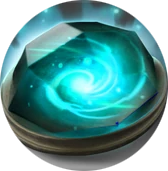

Gem Progress Bars: assets
Every file the prototype uses. The panels, center plate, bars, fills and flash are CSS, not art. Sizes are display sizes in px on the 1920×1080 stage, not the source files' resolution. Back to prototype
Assets
| gem_shard.png | Gem shard on the center plate. Stays in the compact state. | 30×30 · 22×22 compact |
 gem_shard_alt.png | Alternative center icon (a gem orb), swappable with gem_shard.png from the prototype controls while the choice is open. | 30×30 · 22×22 compact |
| logo_radiant.png | Radiant logo at the inner end of the left panel. | 56×56 · 24×24 compact |
| logo_dire.png | Dire logo at the inner end of the right panel. | 56×56 · 24×24 compact |


Prototype only
| context-normal.webp | In-game screenshot, default state. | 1920×1080 stage |
| context-alt.webp | In-game screenshot with ALT held (shows the vanilla elements the bars move for). | 1920×1080 stage |
| context-notify-rampage.webp | In-game screenshot with a rampage notification (a typical two-line announcement), shown while a notification is simulated. | 1920×1080 stage |
| context-notify-triplekill.webp | Rare three-line case (first blood + triple kill), kept for reference. Not used by the page. | — |
| context-notify-firstblood.webp | First blood notification, kept for reference. Not used by the page. | — |
| reference.webp | Felipe's original draft, kept for comparison. Not used by the page. | — |